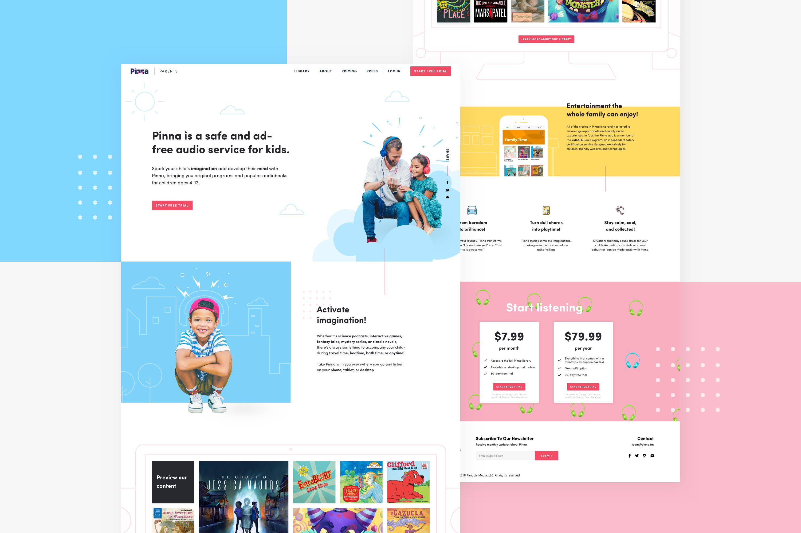
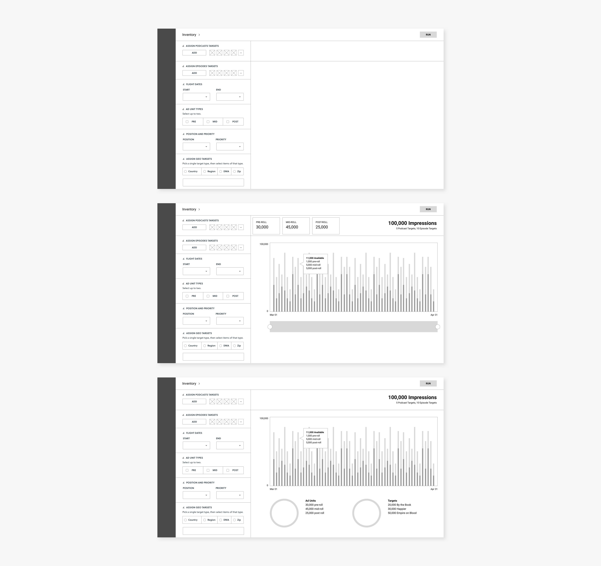
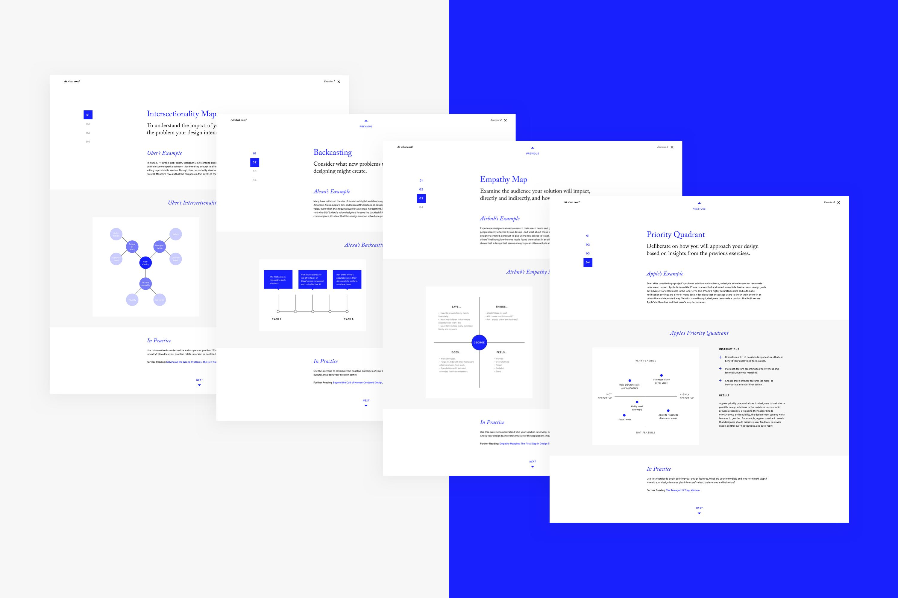

Victoria Sgarro
UI/UX Designer
Projects
Photos
Writing
About
I’m a UI/UX designer currently working at Panoply Media in Washington, D.C.

Pinna

Megaphone

At What Cost?
Coded with ♥ in Washington, D.C. Copyright 2018, Victoria Sgarro.